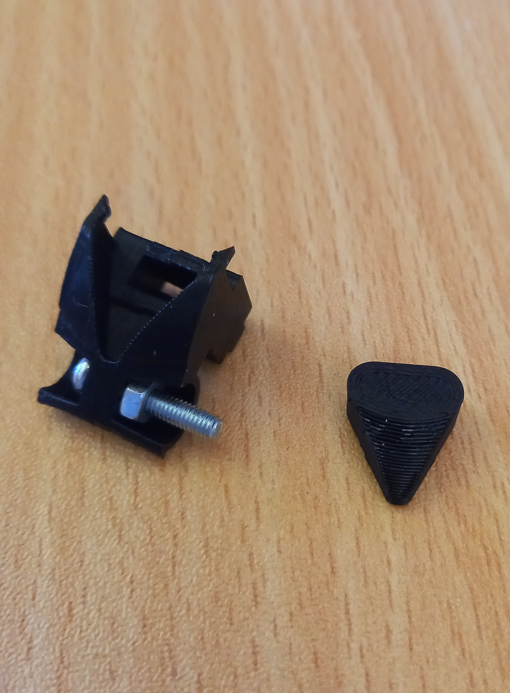

My personal projects
Here are a collection of my larger projects.Joystick
This is the largest of my projects, I wanted to design a joystick for a space flight simulator game.The main idea is to create a HOSAS (dual joysticks) system with additional button boxes and have them mounted to my chair.
Initial Gimbal


I then started designing the main body for the joystick. Using some designs I found online as a reference I designed the first version. I used Slicer for Fusion 360 to cut the model up into segments that could be cut out of cardboard. This was a fast and cheap way to see how the joystick would feel.
Test prints
I started making some test prints for the different components, I wanted the joystick to have a trigger, 3 buttons and a mini joystick on the top. I wanted to make sure I got the individual components working before I 3D printed the whole handel.
I was very happy with this, the spring created nice feedback and the pot had a large range.


Next was testing the design and fit for the buttons and the centering mechanism.
The traces on the PCB allowed me to easily connect wires.
Printing Joystick
I 3D printed one of the Joysticks, this took a couple of iterations but I eventually found a design that worked.Chair Mount
Over the summer break my dad helped me make a mount so the joysticks could be attached directly to my chair.These are easily adjustable and can be removed quickly.

New Gimbal
I wanted to redesign the gimbal system, I found an existing design here. I modified the design a bit to work for my setup.
Button Box
I printed the enclosure for the button box, this also houses the ESP32 which is the brains for the right stick.More tests
I started doing some testing on imbedding a nut into a 3D print and testing an LCD screen and LED light strip on a bread board.
The LCD display needs 9 GPIO pins and the LED driver needs another 3 so I decided to use an arduino Micro to control everything.
The arduino is then controlled by an ESP32 which is connected to the PC and also reads the axis and button inputs.
The video shows the LED strip counting up in binary and the LCD display is displaying a random number. This is all controlled by the ESP32 via the arduino.
Z Axis Clamp
I redesigned the Z axis centering mechanism, Springs and magnets did an ok job of pulling the stick to roughly zero but it was never perfect. Increasing the dead-zone helped a bit but there was always some drift.I decided to use a clamp design that I could manipulate with my pinky, this would allow free movement but would also lock the axis when I needed.